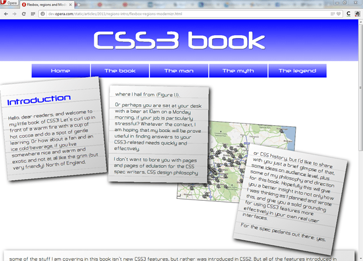
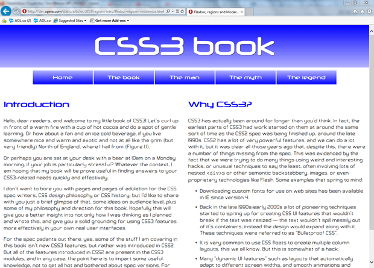

An introduction to CSS regions
Introduction
CSS3 brings with it many features to help us build complex, flexible layouts more easily and logically, without having to resort to JavaScript and painful hacks. One such feature is described in the CSS Regions Module Level 3 — the basic idea here is that you write your content into some good old semantic HTML elements, and then also define a separate set of (non-semantic) containers that will serve as the scaffolding on which to hang your styles that define layout, etc. You then flow your content into your layout containers using the straightforward regions properties. This is nice, as it means you can keep your content completely separate from your layout concerns, without duplicating semantics/data and affecting accessibility. And as an added bonus, providing intelligent alternatives using Modernizr is very straightforward. So let's move forward and have a look!
Regions is currently in Editor's draft stage, so it could change a fair bit before its final publication. At the time of writing, it only works in Chrome Canary, IE10 (in a different way, involving IFrames) and Opera 16, but it is still useful to play with such technologies early, so you can learn them ahead of time and provide valuable feedback to the spec writers. In Chromium/Opera, you'll need to enable the “Experimental WebKit features” flag (type about:flags into a new tab and search for it, or run the browser from the Terminal/command line with the --enable-experimental-webkit-features flag) for it to work.
To give feedback on Regions, contact the CSS working group via their mailing list.
Introducing a regions example
To demonstrate how regions work, let's look at an example. You can test the regions example live, or see what it looks like in Figure 1.

Figure 1: A complicated layout achieved using CSS regions.
In effect, we are completely separating out our content from any kind of layout, bringing the original intention of CSS to a welcome extreme. The content can be flowed into your layout containers regardless of how they are sized and positioned, and will reflow when those containers change size. Try viewing the live example and changing the browser window size. Any content that doesn't fit in the first three region boxes will end up in the fourth box at the bottom, which I'm using as a kind of overflow box (without this, the content would just messily overflow out of the third box and off the bottom of the screen). The content flows into the regions in the order they appear in the original source.
The first thing to note in my example's HTML is the non-semantic layout structure I am going to flow the content into. In effect, these will be our regions:
<div class="layout">
<div class="text-container"><!-- --></div>
<div class="text-container"><!-- --></div>
<div class="image-container">
<img src="../base-styles/grim-north.jpg" alt="A map of the North of England">
</div>
<div class="text-container"><!-- --></div>
</div>
<div class="text-overflow"><!-- --></div>Note: the blank comments are there to get rid of a particularly strange layout bug, where IE6 inserts blank lines when it encounters empty <div>s.
In the CSS, we can create as complex a layout as we want — be as fancy as you like! I did this:
/* positioning and styling for fancy containers */
.layout {
height: 600px;
position: relative;
}
.text-container, .text-overflow {
background: -webkit-repeating-linear-gradient(top, rgba(150,150,150,0.3) 0px, rgba(150,150,150,0.3) 1px, transparent 2px, transparent 40px), -webkit-linear-gradient(top left, rgba(255,255,255,1), rgba(200,200,200,1));
background: -moz-repeating-linear-gradient(top, rgba(150,150,150,0.3) 0px, rgba(150,150,150,0.3) 1px, transparent 2px, transparent 40px), -moz-linear-gradient(top left, rgba(255,255,255,1), rgba(200,200,200,1));
background: -ms-repeating-linear-gradient(top, rgba(150,150,150,0.3) 0px, rgba(150,150,150,0.3) 1px, transparent 2px, transparent 40px), -ms-linear-gradient(top left, rgba(255,255,255,1), rgba(200,200,200,1));
background: repeating-linear-gradient(to bottom, rgba(150,150,150,0.3) 0px, rgba(150,150,150,0.3) 1px, transparent 2px, transparent 40px), linear-gradient(to bottom right, rgba(255,255,255,1), rgba(200,200,200,1));
padding: 2rem;
box-shadow: 0.5rem 0.5rem 20px black;
}
.layout .text-container {
position: absolute;
width: 25%;
height: 300px;
z-index: 2;
}
.layout .image-container {
position: absolute;
}
.layout div:nth-of-type(1) {
top: 0;
left: 0;
-webkit-transform: rotate(-5deg);
-moz-transform: rotate(-5deg);
-ms-transform: rotate(-5deg);
transform: rotate(-5deg);
}
.layout div:nth-of-type(2) {
top: 2rem;
left: 30%;
-webkit-transform: rotate(1deg);
-moz-transform: rotate(1deg);
-ms-transform: rotate(1deg);
transform: rotate(1deg);
}
.layout div:nth-of-type(3) {
display: block;
top: 15rem;
left: 50%;
border: 1px solid black;
-webkit-transform: rotate(4deg);
-moz-transform: rotate(4deg);
-ms-transform: rotate(4deg);
transform: rotate(4deg);
}
.layout div:nth-of-type(4) {
top: 25rem;
left: 67.5%;
-webkit-transform: rotate(10deg);
-moz-transform: rotate(10deg);
-ms-transform: rotate(10deg);
transform: rotate(10deg);
}
.text-overflow {
height: auto;
}Next, note that the actual content of the page is contained inside a nice set of semantic elements, as should be expected:
<article class="content">
<h2>Introduction</h2>
<p>Hello, dear readers…</p>
</article>
<article class="content">
…
</article>Creating some regions
Now on to the actual regions code — this is really simple compared to what I showed above!. To specify that an element, or series of elements will contain the content you want to flow into your regions, you need to use the flow-into property:
.content {
-webkit-flow-into: article;
-moz-flow-into: article;
-ms-flow-into: article;
flow-into: article;
}Next, I'll specify the containers to flow the content into, using the flow-from property, which takes the same identifier specified above.
.text-container {
-webkit-flow-from: article;
-moz-flow-from: article;
-ms-flow-from: article;
flow-from: article;
}
.text-overflow {
-webkit-flow-from: article;
-moz-flow-from: article;
-ms-flow-from: article;
flow-from: article;
}Note: "article" can be anything you like — this is an identifier that you define, for an intermediary stage called a "named flow" — you flow your content into the named flow using flow-into, and flow it into your layout containers using flow-from.
It's that simple — you will now see the content flowed into the layout containers.
Note: The available browser support is not perfect yet — you might find that a few things don't seem to work in regions. For example, I couldn't get multi-col to work on a region, although it is explicitly mentioned in the spec.
Regions fallbacks
Creating fallbacks for non-supporting browsers is pretty easy as far as regions are concerned. You can detect support for Regions using Modernizr (2.6 and above), and then in browsers that don't support it, provide some styling for the semantic content itself, not the layout containers. Let's look at how it was done in our example.
First we need to create a version of Modernizr that has the regions feature detect test in it. To do so, we need to visit the Modernizr download page, click "non-core detects" to expand the list of available options, check "css-regions", then click "Generate!", then "Download".
To add the regions detect to our example, it is just as you'd expect:
<script src="Modernizr.css-regions.js"></script>Next I can add in some alternative styling to provide a simplified layout to browsers that don't support regions. I'll do this using a descendant selector starting with .feature-no-regions, as Modernizr adds the feature-no-regions class to the <html> tag, when the site is rendered in browsers that don't support regions:
.feature-no-regions .layout, .feature-no-regions .text-overflow {
display: none;
}
.feature-no-regions .content {
float: left;
width: 48%;
padding: 1%;
}Here I've simply hidden the layout containers using display: none;, and then provided the two articles with a float, width and padding, so that non-supporting browsers will be left with something usable that doesn't look too terrible (see Figure 2). You are of course welcome to produce something far more interesting!

Figure 2: A simple two column layout, provided as a fallback for browsers that don't support CSS regions, via Modernizr.
Summary
And that concludes my rather short tour of CSS Regions. I hope you found this useful, and I'll look forward to see what you create using this rather interesting new technology. Don't forget to give the CSS working group any feedback you might have on how this feature works.
Chris Mills

Chris Mills is a web technologist, open standards evangelist and education agitator, currently working at Opera Software in the developer relations team. He spends most of his time writing articles about web standards for dev.opera.com and other publications (such as .net mag and A List Apart), giving talks at universities and industry conferences, and lobbying universities to improve their web education courses. He believes that education is the answer to everything, but in particular he is passionate about using education to improve the overall content quality, accessibility, usability and future-viability of the Web.
He is the creator of the Opera Web standards curriculum, contributor to the WaSP InterACT project, and coauthor of InterACT with web standards: A Holistic Approach to Web Design. In August 2011, he also accepted the position of co-chair of the newly-formed Web Education Community Group.
Outside work he is a heavy metal drummer, proud father of three and lover of good beer.
This article is licensed under a Creative Commons Attribution 3.0 Unported license.
Comments
No new comments accepted.